It is widely and undoubtedly recognized that soil enables and sustains life on Earth. Soil provides goods and services for the well-being of humans and for the environment thanks to the natural processes that occur within its matrix and the interaction of biotic and abiotic soil components.Soils host a quarter of the world’s biodiversity and are an essential component of water and nutrients cycles, and in the moderation of the earth’s temperature . In addition, many anthropogenic activities depend on soils as a source of raw materials and as support of human infrastructure.
Soil Ecosystem Services
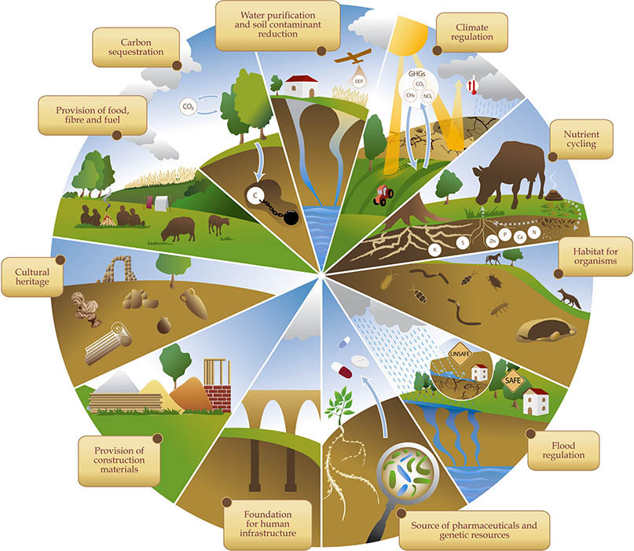
Main ecosystem services provided by soils.
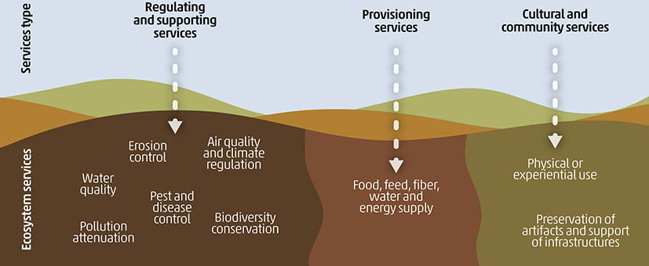
Soils, however, are constantly under threat by multiple anthropogenic and abiotic pressures that cause soil degradation, including physicochemical degradation caused by contaminants, which reduce capacity to provide much-needed ecosystem services. Global climate change alters precipitation patterns and raises temperatures, leading to the emergence and increased recurrence of pests and diseases and altering water availability.
Effects of global change on ecosystems, soils and contaminants fate.
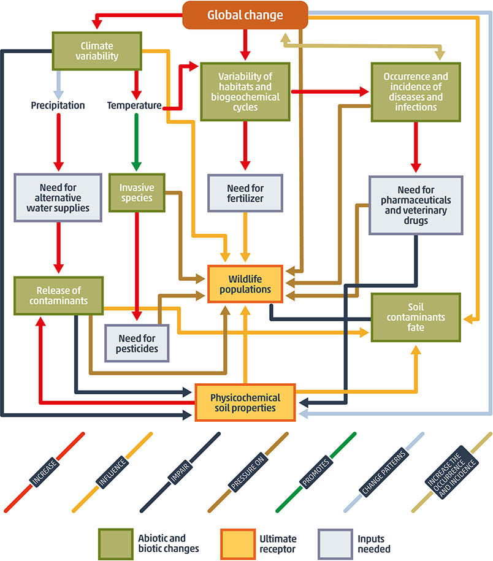
Ecosystems impairment caused by Soil Pollution
Soil pollution affects above- and below-ground biodiversity in two main ways. The number of organisms can be reduced due to the toxicity caused by the contaminants, but also changes can be observed at community level in that tolerant or resistant organisms will benefit compared to those sensitive to the contaminants. It has also been observed that the exposure to some trace elements can induce resistance in soil microorganisms and also promote resistance to antimicrobials (Heydari, 2020). In addition, soil contaminants can enter the food chain and cause disease and mortality in soil-dwelling, terrestrial (including humans) and aquatic organisms. The loss of biodiversity and biomass therefore leads to a decrease in organic matter and changes in nutrient inputs and cycling. This affects the primary productivity of natural and agricultural ecosystems and leads to the overall loss of soil ecosystem services.
Soil degradation and loss of soil ecosystem services
Soil ecosystems services are provided by an interaction of abiotic soil components (soil organic carbon, mineral fractions, soil solution, and pore air) and living organisms (from genes to macro-organisms) present in soils. However, global soils are being depleted and degraded by the constant pressures of a growing population that demands more services and benefits. Soils are also under threat from global challenges, such as by biodiversity loss, imbalances in biogeochemical cycles, chemical pollution, climate change and the hydrogeological cycle, and land use change.
Changes in soil properties that control the soil contaminant buffering and filtering capacity can cause a decrease in the protection mechanisms and instead act as a source, potentially releasing contaminants into other environmental compartments (water, air and organisms). Pollution induced soil degradation can become an iterative cycle of degradation that can ultimately lead to the loss of ecosystem services.
Pollution causes a chain of degradation processes in soil, jeopardizing soil’s ability of providing key ecosystem services. SOC (soil organic carbon).
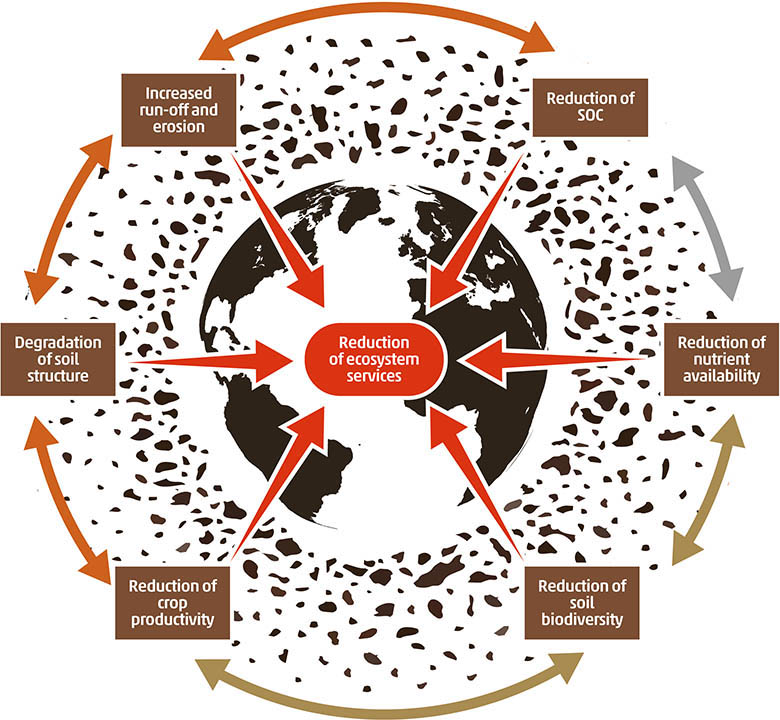
Impacts of soil pollution on soil ecosystem services.
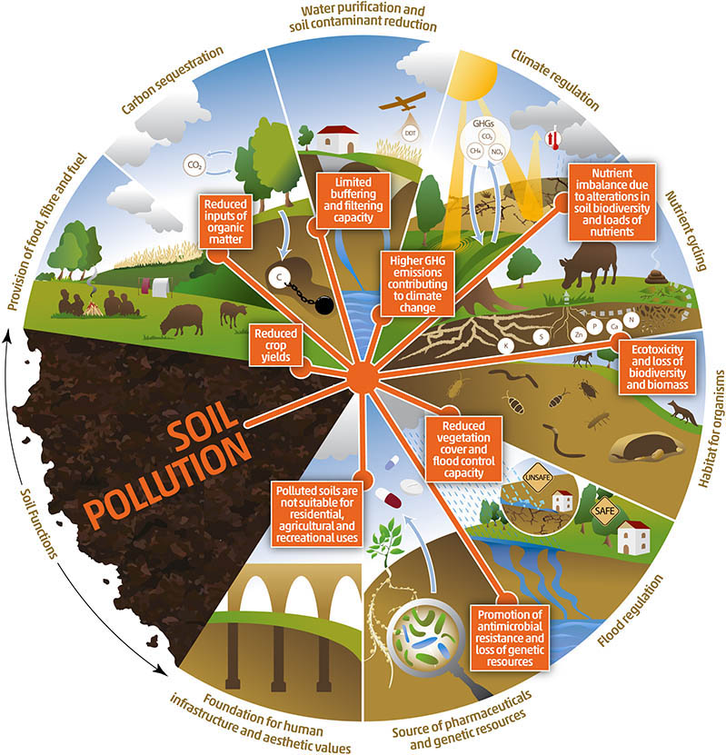
Soil pollution and risk to human health
Soil pollution affects food security in two ways. First, soil pollution can reduce crop yields; this is because toxic pollutants degrade soils over the long term. Second, soil pollution can make foods unsuitable for human consumption
Human exposure to soil pollution is estimated to contribute to more than 500,000 premature deaths globally each year (Landrigan et al., 2018). Most of these deaths occur in vulnerable groups, such as children and the elderly, affected by long-term exposure. Moreover, these deaths are related to exposure to only a limited range of pollutants; the impacts of all soil contaminants on health and well-being are likely to be greater.
Depending on the chemicals involved, soil pollutants can affect various organs, such as the lungs, skin, gut, liver and kidneys. These pollutants can also affect the immune, reproductive, nervous and cardiovascular systems, and more. Evidence suggests that the health impacts of soil pollution disproportionally affect poorer households; for example, poorer households have higher chances of living close to industrial sites and being exposed to contaminated soils
Hotspots for human exposure to soil pollution are contaminated sites, certain agricultural and urban soils, and land that has previously been flooded. A German study monitored toxic pollutants in floodplain soils across the Elbe River in central Europe and assessed health risks The Elbe River and its tributaries are among the most highly polluted rivers in Europe due to a history of intensive industrial activity taking place over centuries. At the same time, these floodplain soils are highly fertile and often used for agriculture. Around the Central Elbe River, arsenic was found to be the primary contributor to total health risk — with chromium second, vanadium third and lead fourth. The study found that children’s health was at dramatically more risk than adults’.
High and increasing concentrations of cadmium have been found in agricultural topsoil across Europe; this mainly comes from phosphate fertilisers. Cadmium is a heavy metal; diet is the principal exposure route in non-smokers (smokers are routinely exposed to cadmium through cigarette smoke). It is linked to harmful health effects, including renal toxicity and osteoporosis. The Mediterranean area, in particular, was found to be very sensitive to the accumulation of cadmium due to local soil properties which affect retention of metals in the soils
Percentage of participants (non-smoking adults, aged 20-39) with cadmium above guideline values across nine European countries, conducted between 2014 and 2020

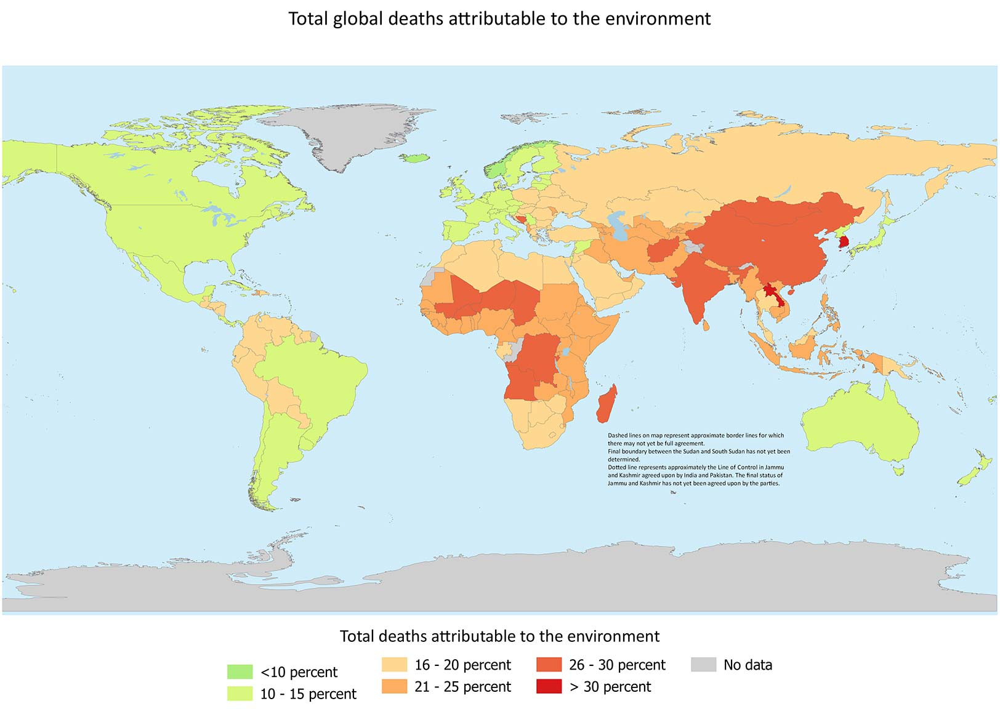
Pathways for exposure
Human beings are in close contact with the environment and the natural resources on which our well-being depends. All components of the environment - water, air, land, organisms - are interconnected and interrelated. Soil is the key link in the functioning of ecosystems.
- Ninety-five percent of our food is produced directly or indirectly from the soil, including both plant and animal products that depend on the nutrients provided by the soil.
- Soil regulates the exchange of gases with the atmosphere and contributes to both the storage and release of greenhouse gases, such as CO2, N2O or CH4, but also of volatile and gaseous contaminants such as mercury, radon, volatile organic contaminants or some POPs
- Soils accumulate less than 1 percent of the global water, but this tiny amount is essential to sustain terrestrial ecosystems. Soils filter water from rainfall or irrigation, store water, support plant growth water needs, and allow the redistribution vertically and horizontally to ground and surface water bodies, thus regulating quality and quantity
Main exposure pathways to soil pollution.
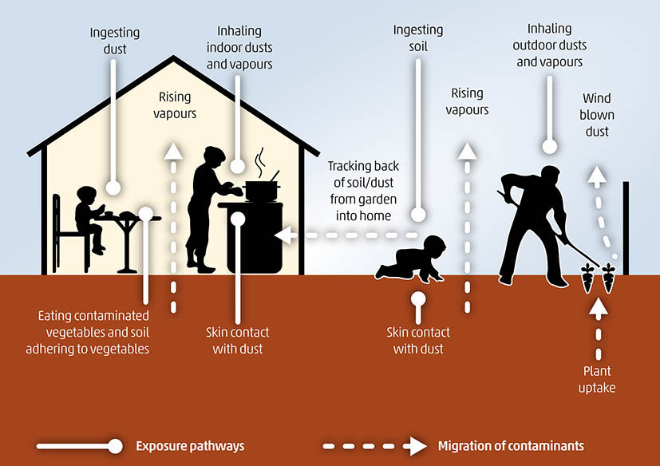
Antimicrobials and antimicrobial resistance
Soil pollution can lead to the propagation of antimicrobial resistance genes, affecting health by increasing human resistance to antimicrobial pharmaceuticals. Antimicrobial resistance genes in soil microorganisms (resulting from irrigation with contaminated water, antibiotics in wastewater sludges spread on land and antibiotics in animal manures) have been observed and are rated as emerging contaminants, posing a potential human health risk worldwid. The topic of AMR is addressed in more detail in the health and chemicals section of this assessment.
Main effects of soil contaminants on human health, indicating the organs or systems affected and the pollutants causing them.
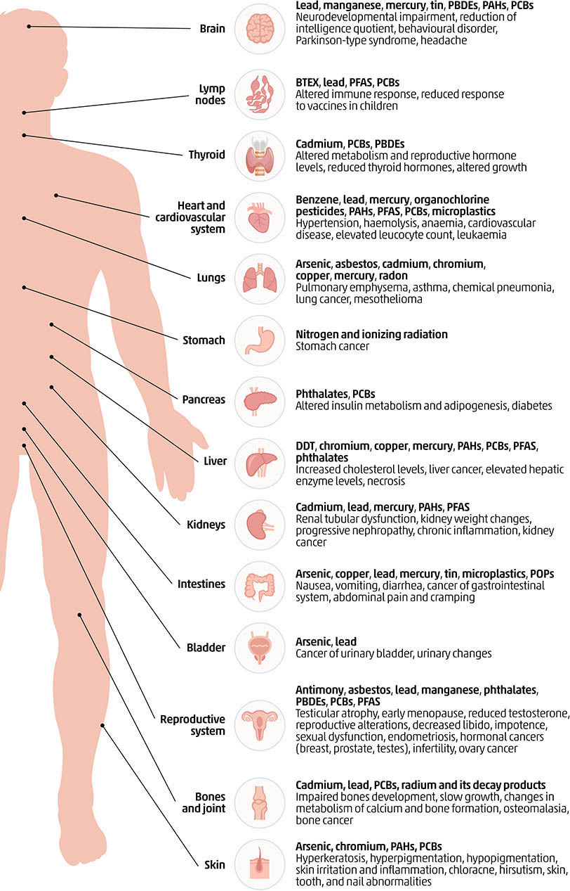
Socio-economic impacts of soil pollution
Social impact os Soil Pollution
Soil pollution exerts profound social impacts on communities and their well-being. Contaminated soil poses significant health risks, as exposure to pollutants can lead to diseases and long-term health issues. Reduced agricultural productivity resulting from soil pollution affects food security, increases prices, and disrupts the livelihoods of farmers and local economies. This can, in turn, lead to the displacement of communities, raising issues of land rights and exacerbating social inequalities. Furthermore, soil pollution often disproportionately affects marginalized groups living near contamination sources, creating social injustices. Cleanup costs strain government budgets and may divert resources from essential social programs, while legal and regulatory disputes can lead to lengthy battles and social and economic consequences. Overall, soil pollution not only impacts human health but also has far-reaching social and economic ramifications that necessitate attention and action for mitigation and prevention.
Main criteria that accentuate vulnerability to soil pollution.
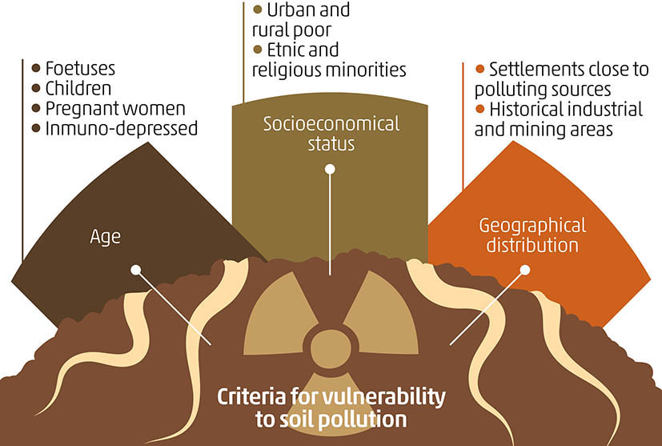
Key principles of environmental justice in the context of soil pollution.
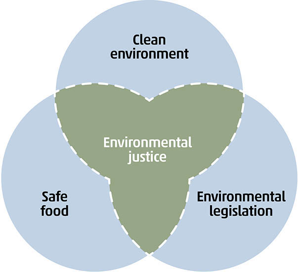
Economic costs of soil pollution
Soil pollution has a direct cost of remediation and management that is easily perceived by society and policy makers. The cost of identifying and characterizing potentially polluted soils is very high, and risk management strategies are often applied, which rely on a more detailed desk study, which is often less costly than laboratory analysis of multiple samples. The cost of remediation varies from site to site depending on the characteristics of the site, such as the size of the affected area, the concentration of contaminants, the environmental compartments to be remediated (topsoil, vadose zone, groundwater, surface water), the protective measures for the population during the remediation work, the acceptable level to be achieved depending on the land use after remediation, as well as the technology chosen . Some of the countries contributing to this report indicated that they spend an average ranging from tens of thousands of dollars annually, as reported by countries such as Ecuador or the Kingdom of Eswatini, to tens or hundreds of millions of dollars annually, as in the case of Germany, Finland, the Netherlands, or Belgium. National experts estimate that the cost of remediating all polluted soils in China could run into hundreds of billions of dollars.
There are, however, other indirect costs that are often neglected, leading to underestimation of the impacts of soil pollution . Many ecosystem services are hampered by soil pollution, losing productivity and resilience in the long term. An example of estimating the cost of pollution due to loss of ecosystem services was carried out by Garcia and co-workers in relation to the collapse of the Samarco Corporation mine-tailings dam. The authors estimated that the toxic sludge affected over 8 million hectares and resulted in the loss of ecosystem services worth USD 521 million per year .
Quantifiable economic losses due to soil pollution are loss of soil productivity and reduction of crop yields, contamination of food products and loss of marketability, reduction of biodiversity, and reduction of water quality.
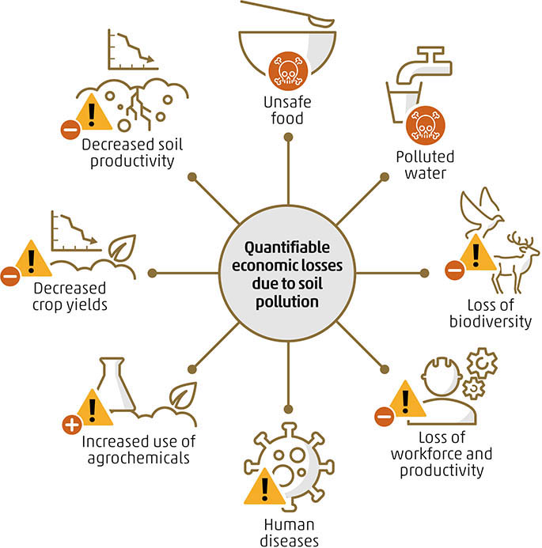
Key consequences of soil pollution on Economic
- Reduced Agricultural Productivity: Soil pollution can lead to reduced crop yields and poor-quality produce. Contaminants in the soil can harm plant growth, decrease nutrient availability, and affect the health of crops. Farmers may experience lower profits due to reduced harvests and increased input costs to combat soil contamination.
- Increased Agricultural Costs: Dealing with soil pollution often requires remediation efforts, such as soil testing, cleanup, and the use of alternative farming methods. These measures can be costly for farmers and agricultural enterprises, leading to increased production expenses.
- Health Care Costs: Soil pollution can result in the contamination of food and water supplies, potentially leading to health issues in humans and livestock. The economic burden of healthcare costs associated with soil pollution-related illnesses can be significant.
- Reduced Land Value: Soil pollution can decrease the value of land, making it less attractive for real estate development and other commercial purposes. Property owners may face difficulties in selling their land or may have to sell it at a reduced price.
- Cleanup and Remediation Costs: Cleaning up contaminated soil can be an expensive and time-consuming process. Government agencies, landowners, or businesses responsible for the pollution may be required to invest in costly soil remediation efforts, which can strain financial resources.
- Legal Liabilities and Fines: Businesses or individuals responsible for soil pollution may face legal actions and fines, which can have a direct impact on their finances. Legal disputes and settlements can lead to substantial economic consequences.
- Reduced Ecosystem Services: Soil pollution can harm ecosystems, affecting services such as water purification, nutrient cycling, and habitat support. The loss of these services can result in higher costs for water treatment and other ecosystem-dependent activities.
- Tourism and Recreation: Soil pollution can negatively affect the attractiveness of recreational areas and tourist destinations, impacting the tourism industry in affected regions. Reduced tourist activity can lead to lost revenue for local businesses.
- Supply Chain Impacts: Industries dependent on agricultural products may face disruptions in their supply chains due to reduced crop yields and poor-quality raw materials. This can result in increased costs and potential product shortages.
- Long-Term Economic Consequences: Soil pollution can have long-lasting economic effects, as the impacts on soil quality and ecosystems may persist for many years. This can hinder economic development and sustainable growth in affected areas.